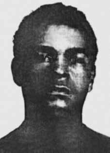

Roberto
Cietto
CIRCUNSTÂNCIAS DA MORTE
Roberto Cietto foi preso, no dia 4 de setembro de 1969, quando passava diante da casa do embaixador dos Estados Unidos, Charles Burke Elbrick, que acabara de ser sequestrado. Reconhecido por agentes do aparato repressivo e levado para o PIC no 1° BPE, foi morto, sob tortura, no mesmo dia. De acordo com a versão apresentada por órgãos do Estado, Roberto Cietto teria se suicidado nas dependências do 1º BPE. Conforme consta no Termo de inquirição de testemunhas, do dia 19 de setembro de 1969, o soldado Marçal Veneri afirma que estava realizando a guarda no dia da ocorrência e que, no momento em que foi verificar as celas, Roberto estava vivo.
Além disso, declarou que não percebeu ninguém entrando na cela. No entanto, ao realizar nova ronda, percebeu que algo havia acontecido. Ao chegar próximo à cela de Roberto, notou que ele se encontrava imóvel atrás do banheiro. O soldado alegou ter chamado o sargento Valdomiro Koroll e mais um soldado sentinela e, juntos, teriam visto, através das grades, que Roberto encontrava-se imóvel. Ao entrar na cela teriam confirmado que ele se encontrava enforcado, com um cadarço e um pedaço de pano amarrado ao registro do banheiro.
O corpo de Roberto Cietto deu entrada no Instituto Médico-Legal (IML) no dia 4 de setembro de 1969. Foi necropsiado pelos médicos Elias Freitas e João Guilherme Figueiredo e o laudo reforça a versão de que Roberto teria se enforcado. Ainda de acordo com o laudo, ele teria sido encontrado no banheiro da cela da Polícia do Exército (PE) em “suspensão parcial”, “sentado no piso”, posições que, de acordo com os órgãos da repressão, representariam o suposto suicídio.
Tomando o caso de Roberto Cietto como exemplo, o coronel Luiz Helvécio da Silveira Leite declarou ao jornalista Elio Gaspari que a simulação de suicídio era um expediente utilizado no Batalhão da Polícia do Exército para encobrir os mortes provocadas pela tortura. Referindo-se à morte de Chael Charles Schreier, Gaspari registra da seguinte forma os procedimentos relatados pelo coronel: Havia um cadáver na 1ª Companhia da PE.
Em casos anteriores esse tipo de problema fora resolvido com um procedimento rotineiro. Fechava-se o caixão, proclamava-se o suicídio e sepultava-se o morto. O método já dera certo duas vezes, naquele mesmo quartel. Em maio, com Severino Viana Colom, e em setembro, com Roberto Cieto (sic). Investigações posteriores passaram a questionar a versão inicial e o parecer dos médicos-legistas, já que as fotos e o laudo de perícia do local da morte, encontrados no IML pelo Grupo Tortura Nunca Mais do Rio de Janeiro (GTNM-RJ), revelaram que o corpo de Roberto Cietto apresentava escoriações ignoradas no relatório dos médicos, tais como hematomas na pálpebra direita, braço direito e perna esquerda, o que indica que ele foi submetido à tortura. Além disso, a análise do material fotográfico mostra que não era possível Roberto se enforcar na posição em que os agentes de segurança o teriam encontrado.
Além dessas evidências, em entrevista à revista Veja, em 3 de novembro de 1999, o coronel do Exército, Élber de Mello Henriques, confirmou que Cietto havia sido torturado no quartel da polícia do Exército. Segundo declarou, teria visto Roberto pendurado em um “pau-de-arara”, em estado de evidente sofrimento. Segundo relatou, ele teria solicitado que tirassem Roberto Cietto dali, pois tinha a intenção de interrogá- lo em outro dia. Quando retornou ao quartel na semana seguinte, mandou que o encaminhassem, mas foi informado que ele havia se suicidado.
O coronel Élber de Mello Hentiques recordou, ainda, que naquela ocasião apresentou uma denúncia ao general Carlos Alberto Cabral Ribeiro, chefe do Estado Maior do I Exército, contra o tenente-coronel José Ney Fernandes Antunes, por ter autorizado a tortura dos presos políticos. Entretanto, o general Carlos Alberto nada teria feito contra os torturadores e ainda afastou o coronel Élber de Mello do quartel.
Reafirmando a fala do coronel Élber de Mello Henriques, em depoimento à Comissão Nacional da Verdade (CNV), Flávio Tavares descreve não só como viu o corpo de Cietto, como faz uma clara homenagem ao companheiro de militância política:
[…] no dia em que sequestram o embaixador norte americano me levam de novo para uma cela, dessas celas individuais no piso térreo e, com luzes apagadas, me fazem entrar na cela. Eu tropeço numa pessoa que dorme, até que eu me habituo à escuridão e verifico que a pessoa não dorme, está morta! Era um rapaz: rapaz é modo de dizer, ele devia ter uns 29 anos, era negro e pobre! Primeiras vítimas: negro e pobre! Não tinha ninguém para interferir por ele, era do nosso movimento, esse rapaz foi uma coisa muito linda. […] ele tinha roubado um carro no Rio e ele era analfabeto, foi sentenciado à 12 anos de prisão e, na penitenciária Lemos de Brito, ele aprendeu, ele foi alfabetizado. Ele era muito inteligente, inteligentíssimo.
Roberto Cietto, foi alfabetizado e politizado pelos marinheiros que estiveram presos lá, os marinheiros expulsos da Marinha e, bom, ele começa a ler. E depois em uma fuga que teve da penitenciária Lemos de Brito ele saiu. Ele foi um dos dois presos comuns escolhido pelos presos políticos para acompanhar. Então ele foi para uma tentativa de foco guerrilheiro que se fez em Angra dos Reis, mas ele tinha um problema tinha que ser operado de uma hérnia, então ele voltou para o Rio.
Eu acho que eles me levaram para a cela dele para que eu reconhecesse quem era, entendeu? Ele não disse nenhum nome, ele cuspia na cara desse major Fontenelli, cuspia, e aí ele foi morto asfixiado. A vida desse rapaz é muito bonita, porque ele era um marginal, um marginal pela sua situação social, eu não vou fazer aqui uma falsa sociologia, que foi reabilitado e alfabetizado. Ele era inteligentíssimo, só que tinha tido uma vida miserável no Rio. Roberto Cietto. E esse coronel Élber Melo Henriques viu o Cietto, ele conta em detalhes. Viu o Cietto, viu o cadáver – muito possivelmente depois de mim – e aí que ele fez uma carta ao comandante do Exército denunciando a morte do Cietto e as minhas torturas.
O Cietto foi morto no dia do sequestro do embaixador norte-americano, uma coincidência, dia 4/9/1969. Roberto Cietto foi enterrado como indigente no cemitério de Santa Cruz, no Rio de Janeiro.
Roberto Cietto was arrested on September 4, 1969, as he passed by the home of the United States ambassador, Charles Burke Elbrick, who had just been kidnapped. Recognized by agents of the repressive apparatus and taken to the PIC in the 1st BPE, he was killed under torture on the same day. According to the version presented by State bodies, Roberto Cietto committed suicide on the premises of the 1st BPE. As stated in the Witness Interview Form, dated September 19, 1969, soldier Marçal Veneri states that he was guarding the day of the incident and that, at the time he went to check the cells, Roberto was alive.
Furthermore, he stated that he did not notice anyone entering the cell. However, when he carried out another round, he realized that something had happened. When he arrived close to Roberto's cell, he noticed that he was motionless behind the bathroom. The soldier claimed to have called Sergeant Valdomiro Koroll and another sentry soldier and, together, they would have seen, through the bars, that Roberto was motionless. Upon entering the cell, they confirmed that he was hanging, with a shoelace and a piece of cloth tied to the bathroom valve.
Roberto Cietto's body was admitted to the Instituto Médico-Legal (IML) on September 4, 1969. It was autopsied by doctors Elias Freitas and João Guilherme Figueiredo and the report reinforces the version that Roberto had hanged himself. Also according to the report, he was found in the bathroom of the Army Police (PE) cell in “partial suspension”, “sitting on the floor”, positions that, according to the repression bodies, would represent the supposed suicide.
Taking the case of Roberto Cietto as an example, Colonel Luiz Helvécio da Silveira Leite told journalist Elio Gaspari that simulated suicide was a device used by the Army Police Battalion to cover up deaths caused by torture. Referring to the death of Chael Charles Schreier, Gaspari records the procedures reported by the colonel as follows: There was a corpse in the 1st Company of the PE.
In previous cases, this type of problem had been resolved with a routine procedure. The coffin was closed, suicide was proclaimed and the dead man was buried. The method had already worked twice, in that same barracks. In May, with Severino Viana Colom, and in September, with Roberto Cieto (sic). Subsequent investigations began to question the initial version and the opinion of the medical examiners, since the photos and the forensic report of the place of death, found at the IML by the Grupo Tortura Nunca Mais do Rio de Janeiro (GTNM-RJ), revealed that Roberto Cietto's body had abrasions ignored in the doctors' report, such as bruises on the right eyelid, right arm and left leg, which indicates that he was subjected to torture. Furthermore, the analysis of the photographic material shows that it was not possible for Roberto to hang himself in the position in which the security agents would have found him.
In addition to this evidence, in an interview with Veja magazine, on November 3, 1999, the Army colonel, Élber de Mello Henriques, confirmed that Cietto had been tortured in the Army police barracks. As he stated, he had seen Roberto hanging from a “pau-de-arara”, in a state of obvious suffering. According to reports, he had requested that Roberto Cietto be removed from there, as he intended to interrogate him on another day. When he returned to the barracks the following week, he ordered him to be taken away, but was informed that he had committed suicide.
Colonel Élber de Mello Hentiques also recalled that on that occasion he presented a complaint to General Carlos Alberto Cabral Ribeiro, Chief of Staff of the 1st Army, against Lieutenant Colonel José Ney Fernandes Antunes, for having authorized the torture of political prisoners. However, General Carlos Alberto did nothing against the torturers and even removed Colonel Élber de Mello from the barracks.
Reaffirming the speech of Colonel Élber de Mello Henriques, in a statement to the National Truth Commission (CNV), Flávio Tavares describes not only how he saw Cietto's body, but also pays a clear tribute to his fellow political activist:
[…] on the day they kidnap the North American ambassador, they take me back to a cell, one of those individual cells on the ground floor, and, with the lights off, they make me enter the cell. I stumble upon a sleeping person, until I get used to the darkness and realize that the person is not sleeping, they are dead! It was a boy: boy is the way to say, he must have been about 29 years old, he was black and poor! First victims: black and poor! There was no one to interfere for him, he was part of our movement, this boy was a very beautiful thing. […] he had stolen a car in Rio and he was illiterate, he was sentenced to 12 years in prison and, in the Lemos de Brito penitentiary, he learned, he became literate. He was very intelligent, very intelligent.
Roberto Cietto, was literate and politicized by the sailors who were imprisoned there, the sailors expelled from the Navy and, well, he starts to read. And then in an escape he had from the Lemos de Brito penitentiary he left. He was one of two common prisoners chosen by political prisoners to accompany them. So he went to an attempted guerrilla focus in Angra dos Reis, but he had a problem and had to undergo surgery for a hernia, so he returned to Rio.
I think they took me to his cell so I could recognize who it was, understand? He didn't say any names, he spat in Major Fontenelli's face, spat, and then he was asphyxiated to death. This boy's life is very beautiful, because he was a marginal, a marginal due to his social situation, I'm not going to make a false sociology here, he was rehabilitated and literate. He was very intelligent, but he had had a miserable life in Rio. Roberto Cietto. And this colonel Élber Melo Henriques saw the Cietto, he explains in detail. He saw Cietto, he saw the corpse – quite possibly after me – and then he wrote a letter to the Army commander denouncing Cietto's death and my torture.
Cietto was killed on the day of the kidnapping of the North American ambassador, a coincidence, on 9/4/1969. Roberto Cietto was buried as a pauper in the Santa Cruz cemetery, in Rio de Janeiro.
Roberto Cietto fue detenido el 4 de septiembre de 1969, al pasar por la casa del embajador de Estados Unidos, Charles Burke Elbrick, que acababa de ser secuestrado. Reconocido por agentes del aparato represivo y llevado al PIC del 1º BPE, fue asesinado bajo tortura el mismo día. Según la versión presentada por organismos del Estado, Roberto Cietto se suicidó en las instalaciones del 1º BPE. Según consta en el Formulario de Entrevista a Testigos, fechado el 19 de septiembre de 1969, el soldado Marçal Veneri afirma que estaba custodiando el día del incidente y que, en el momento en que fue a revisar las celdas, Roberto estaba vivo.
Además, afirmó que no notó que nadie ingresara a la celda. Sin embargo, cuando realizó otra ronda, se dio cuenta de que algo había sucedido. Cuando llegó cerca de la celda de Roberto, notó que estaba inmóvil detrás del baño. El militar afirmó haber llamado al sargento Valdomiro Koroll y a otro centinela y, juntos, habrían visto, a través de los barrotes, que Roberto estaba inmóvil. Al ingresar a la celda confirmaron que se encontraba colgado, con un cordón de zapato y un trozo de tela atado a la válvula del baño.
El cuerpo de Roberto Cietto fue ingresado en el Instituto Médico-Legal (IML) el 4 de septiembre de 1969. Fue autopsiado por los doctores Elias Freitas y João Guilherme Figueiredo y el informe refuerza la versión de que Roberto se había ahorcado. También según el informe, fue encontrado en el baño de la celda de la Policía del Ejército (PE) en “suspensión parcial”, “sentado en el suelo”, posturas que, según los órganos de represión, representarían el supuesto suicidio.
Tomando como ejemplo el caso de Roberto Cietto, el coronel Luiz Helvécio da Silveira Leite dijo al periodista Elio Gaspari que el suicidio simulado era un recurso utilizado por el Batallón de Policía del Ejército para encubrir muertes causadas por torturas. Refiriéndose a la muerte de Chael Charles Schreier, Gaspari registra los procedimientos relatados por el coronel de la siguiente manera: Había un cadáver en la 1.ª Compañía del PE.
En casos anteriores, este tipo de problemas se habían resuelto con un procedimiento rutinario. Se cerró el ataúd, se proclamó el suicidio y se sepultó al muerto. El método ya había funcionado dos veces, en ese mismo cuartel. En mayo, con Severino Viana Colom, y en septiembre, con Roberto Cieto (sic). Investigaciones posteriores comenzaron a cuestionar la versión inicial y la opinión de los médicos forenses, ya que las fotografías y el informe forense del lugar de la muerte, encontrados en el IML por el Grupo Tortura Nunca Mais do Rio de Janeiro (GTNM-RJ), revelaron que el cuerpo de Roberto Cietto presentaba abrasiones ignoradas en el informe médico, como hematomas en el párpado derecho, brazo derecho y pierna izquierda, lo que indica que fue sometido a tortura. Además, del análisis del material fotográfico se desprende que no fue posible que Roberto se ahorcara en la posición en la que lo habrían encontrado los agentes de seguridad.
Además de estas pruebas, en una entrevista con la revista Veja, el 3 de noviembre de 1999, el coronel del Ejército, Élber de Mello Henriques, confirmó que Cietto había sido torturado en el cuartel de la policía del Ejército. Según afirmó, había visto a Roberto colgado de un “pau-de-arara”, en estado de evidente sufrimiento. Según los informes, habría solicitado que sacaran de allí a Roberto Cietto, pues tenía intención de interrogarlo otro día. Cuando regresó al cuartel la semana siguiente, ordenó que se lo llevaran, pero le informaron que se había suicidado.
El coronel Élber de Mello Hentiques también recordó que en esa ocasión presentó una denuncia ante el general Carlos Alberto Cabral Ribeiro, Jefe de Estado Mayor del 1.º Ejército, contra el teniente coronel José Ney Fernandes Antunes, por haber autorizado la tortura de presos políticos. Sin embargo, el general Carlos Alberto no hizo nada contra los torturadores e incluso sacó del cuartel al coronel Élber de Mello.
Reafirmando el discurso del coronel Élber de Mello Henriques, en una declaración ante la Comisión Nacional de la Verdad (CNV), Flávio Tavares describe no sólo cómo vio el cuerpo de Cietto, sino que también rinde un claro homenaje a su colega político:
[…] el día que secuestran al embajador norteamericano, me llevan nuevamente a una celda, una de esas celdas individuales de la planta baja, y con las luces apagadas me hacen entrar a la celda. Me tropiezo con una persona dormida, hasta que me acostumbro a la oscuridad y me doy cuenta de que la persona no está durmiendo, ¡está muerta! Era un niño: niño es la forma de decir, debía tener unos 29 años, ¡era negro y pobre! Primeras víctimas: ¡negros y pobres! No había nadie que interfiriera por él, él era parte de nuestro movimiento, este niño era una cosa muy hermosa. […] había robado un auto en Río y era analfabeto, lo condenaron a 12 años de prisión y, en el penal de Lemos de Brito, aprendió, se alfabetizó. Era muy inteligente, muy inteligente.
Roberto Cietto, se alfabetizó y politizó por los marinos que allí estuvieron presos, los marinos expulsados de la Marina y, bueno, empieza a leer. Y luego en una fuga que tuvo del penal de Lemos de Brito se fue. Fue uno de los dos presos comunes elegidos por los presos políticos para acompañarlos. Entonces fue a un intento de foco guerrillero en Angra dos Reis, pero tuvo un problema y tuvo que ser operado de una hernia, por lo que regresó a Río.
Creo que me llevaron a su celda para que pudiera reconocer quién era, ¿entiendes? No dijo ningún nombre, escupió en la cara al mayor Fontenelli, escupió y luego lo asfixiaron. La vida de este niño es muy hermosa, porque era un marginal, un marginal por su situación social, no voy a hacer aquí una falsa sociología, fue rehabilitado y alfabetizado. Era muy inteligente, pero había tenido una vida miserable en Río. Roberto Cietto. Y este coronel Élber Melo Henriques vio el Cietto, explica detalladamente. Vio a Cietto, vio el cadáver –muy posiblemente después de mí– y luego escribió una carta al comandante del ejército denunciando la muerte de Cietto y mi tortura.
Cietto fue asesinado el día del secuestro del embajador norteamericano, casualidad, el 4/9/1969. Roberto Cietto fue enterrado como indigente en el cementerio de Santa Cruz, en Río de Janeiro.